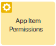
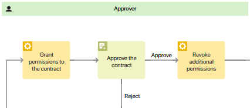
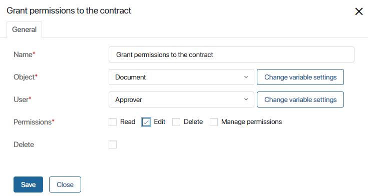
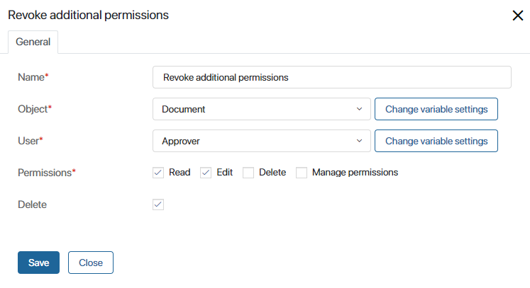

Use this activity to temporarily grant a task executor additional permissions for a certain app item.
In business processes, the following access settings are applied to app items by default:
- Access to app data set up in the app’s access settings.
- Additional permissions configured on the app item’s page.
The user also has the permission to view app items specified in tasks if the Permissions option is enabled in their swimlane and the Restrict access to app items option is selected in the app’s access settings.
If these permissions aren’t enough, add the App Item Permissions activity to the process diagram. Place it before the task that the user will need additional rights for.
You can revoke additional permissions when the task is completed.
начало внимание
The settings in the activity will be applied only if the Restrict access to app items option is selected in the app’s access settings. With other options, additional permissions cannot be granted.
конец внимание
Let’s say we’re setting up an approval process where a user may need to edit a contract that they don’t have access to. The settings of the swimlane where the task is placed will only allow the user to view the contract. To make changes to it, additional permissions need to be granted. Here is an example of how the activity can be placed on the process diagram:

Activity settings
To configure the activity’s settings, add it to the process diagram and double-click on it. In the window that opens, specify the activity’s name and fill out the fields:

- Object*. Specify the variable that contains the app item you need to grant access to. If the variable doesn’t exist in the process context, click Create a new variable. You can change some variable settings such as the display name and sorting options by clicking Change variable settings.
- User*. Specify the user you want to grant permissions to. You can select a variable or add a new one.
- Permissions*. Select the permissions you want to grant to the user. You can choose from Read, Edit, Delete, and Manage permissions options. If you check the Delete box under this field, the permissions you specify will be revoked.
- Delete. Use this option to revoke additional permissions.
In our example, we can select the Contract variable that stores the document in the business process. In the User field, we’ll select the variable storing the data of the approver. Then we can grant this user the permission to edit the app item. The permission to view it will be given in the swimlane’s settings.
Revoke additional permissions
You can revoke additional permissions if the user no longer needs them, and the app item’s data is confidential. To do that, place the App Item Permissions activity on the process diagram again after the task that requires additional permissions.
In the example, we need to place the activity after the contract is approved. In its settings, we’ll check the Read and Edit permissions and select the Delete option.

Now when the user completes the approval task, the following additional permissions will be revoked:
- The Edit permission granted in the App Item Permissions activity placed earlier in the business process.
- The Read permission granted in the swimlane’s settings.
Found a typo? Select it and press Ctrl+Enter to send us feedback